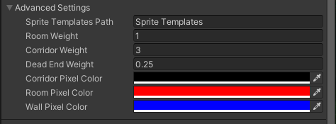

Advanced Settings

You generally will not need to use any of these settings unless you are extending this code and/or using custom sprite sheets.
Sprite Templates Path
The name of the file or folder relative to the Resources folder which contains the sprites that you want to use for templates. The default value of "Sprite Templates" points to the folder "Resources/Sprite Templates".
Room Weight
When doing the WFC algorithm, tiles that represent rooms will be more likely to be selected if this value is higher. Increase this to favor larger rooms.
Corridor Weight
When doing the WFC algorithm, tiles that represent corridors will be more likely to be selected if this value is higher. Increase this to favor more corridor space.
Dead End Weight
When doing the WFC algorithm, tiles that feature a "dead-end" of either room or corridor pixels will be more likely to be selected if this value is higher. Because of how room and corridor placement actually works, this value really only affects rooms.
Corridor Pixel Color
The color of the pixels representing corridors on your sprite templates. Defaults to a specific color value. Only change this if you're using custom sprite templates.
Room Pixel Color
The color of the pixels representing rooms on your sprite templates. Defaults to a specific color value. Only change this if you're using custom sprite templates.
Wall Pixel Color
The color of the pixels representing walls on your sprite templates. Defaults to a specific color value. Only change this if you're using custom sprite templates.